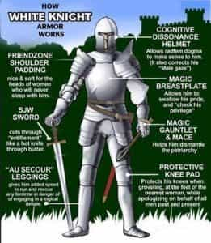
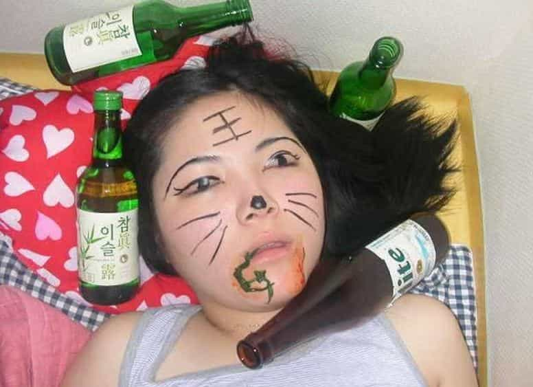

Chris Janson’s new song suggests that a real man takes care of a drunk girl and assures she gets home. I’m haven’t decided on what is more disgusting: Chris Janson for making this, or anyone who puts this on the airwaves. I speculate that this is a parody like Weird Al Yankovich used to do. Below you will find the music video for the song in question. Try not to spit out your whiskey.
I recommend you watch the video itself as it is cringe-worthy of your time. The girl in the video is shown to have a tough childhood because she had an angry father. Years later, she is shown drinking too much at a party, goes to a room with a guy, passes out, and, I assume, has sex with said guy. This isn’t x-rated so I can’t confirm without evidence.
The pretty blond in the video doesn’t seem to learn accountability as she is then shown throwing herself at some long haired guy more years later. What we don’t expect is the long hair is a real man because he sends her home rather then give her what she wants.

Chris Janson’s Advice: Be a man; take a drunk girl home
Since the song is a plea directed at men, and some of you prefer to read instead of watch a video, I will present to you what Chris Janson suggests you do in order to be a man.
Couple cover charge stamps got her hand looking like a rainbow
In and out of every bar on a whim just like the wind blows
She’s either a bachelorette or coming off a breakup
Take a drunk girl home
Look at her. She’s been to more than three bars tonight. Whatever her situation is, she needs a night of heavy drinking. You, White Knight, should make sure she gets home.
She’s bouncing like a pinball
Singing every word she never knew
Dancing with her eyes closed like she’s the only one in the room
Her hair’s a perfect mess, falling out of that dress
Take a drunk girl home
She’s getting belligerent, don’t be afraid. Her red eyes, slurred speech, tangled dress, and messy hair are all so beautiful. Appreciate her and make sure she gets home safely, Beta Boss. She can do no wrong; she had a bad dad. That’s enough of an excuse for anything.
Take a drunk girl home
Let her sleep all alone
Leave her keys on the counter, your number by the phone
Pick up her life she threw on the floor
Leave the hall lights on walk out and lock the door
That’s how she knows the difference between a boy and man
Take a drunk girl home
You’re the only one left around her at the end of the night. It is your sole responsibility that she gets home and sleeps alone. Fight the urge to say yes to her, hero. Make sure you tidy things up and leave her keys and phone is an obvious spot. She’s a physical and emotional mess and you need to clean it up, Cuck Captain. When she wakes up, she’ll realize you’re a real man and not like her father.
Took a drunk girl home
In the sober light of dawn
She left you a message she thanked you on the phone
Cause you picked up her life she threw on the floor
You left the hall lights on walked out and locked the door
That’s how she knows the difference between a boy and man
Take a drunk girl home
Congratulations. You took a drunk girl home. She leaves you a thank you message before she texts her friend with benefits. You did deny her action last night. But trust me, this time she’ll know the difference between a boy and a man. You’ll be a man.
You took a drunk girl home
Take a drunk girl home
Wow, you actually took a drunk girl home.

Conclusion
Drunk Girl is a ridiculous song and you can’t help but laugh, although if the humor is intentional is uncertain. Read the advice that Chris Janson gives and do the opposite. I shouldn’t have to say it but you should never follow a woman who is unstable or can’t consent to sex. Janson doesn’t understand that now women are allowed to drink however much she wants—she doesn’t need a hero.
Read Next: How Girl Power Is Ruining The Culture